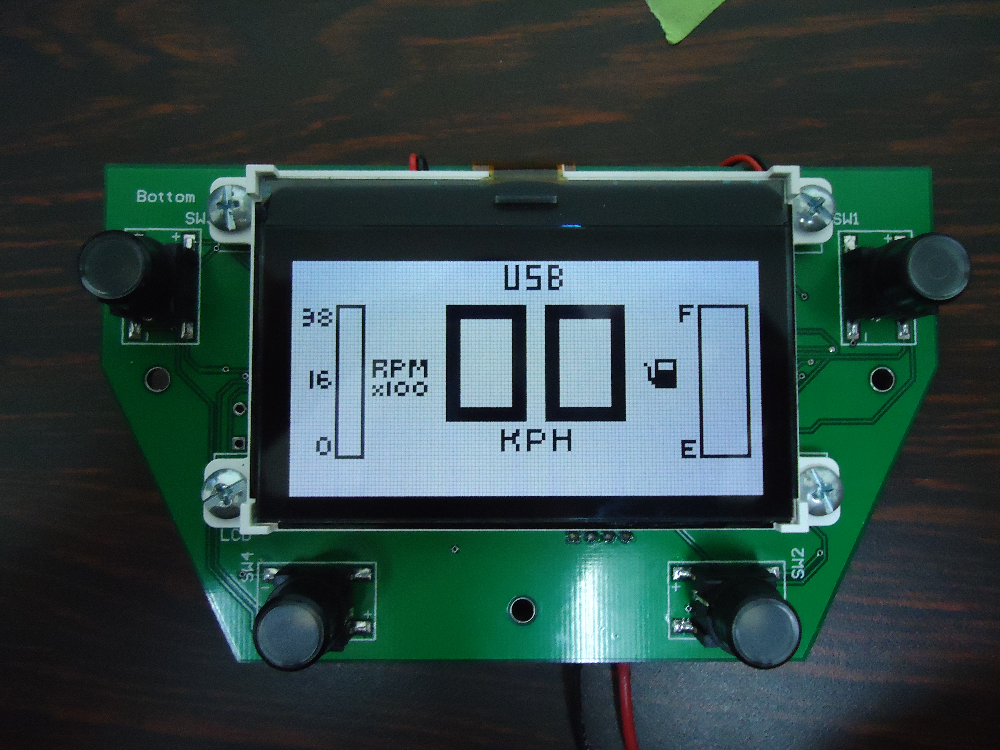

Electronic Devices for Racing Vehicles
Design and development of electronic devices for data acquisition in racing vehicles, including fuel level meters, tachometers, brake pressure meters, wheel alignment systems(toe, camber and caster), and speedometers. The process included prototyping, PCB design, firmware programming, soldering (through hole and surface-mount) and testing. The complete system included a CAN bus (Controller Area Network) for robust communication between microcontrollers.



Posted In:
Vehicles